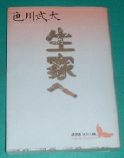

Book review 書壇。
（１３）生家へ
阿佐多哲也の著作となれば、なんでも買う。もちろん新作が発行されることはあり得ない。あくまで新装丁による新刊がその対象。先日も書店で「生家へ」の文庫本を見つけた。
講談社文芸文庫（4-06-198257-5）
「生家へ」は、昭和52年から昭和54年にかけて中央公論社の文芸誌「海」に連載された作品。中央公論社は昭和54年（1979）単行本としたものを、昭和61年（1986）、文庫出版している（中公文庫）。それを今度は、講談社が文庫化したもの。
それはいいけれど、これがものすごく高い。なんと税別で1250円！。これはもう単行本の価格だ。そもそも文庫というのは廉価なのがウリ。じっさいそれが1250円というのは、いくらなんでも、ちと高い。書店主といっしょに、思わず「高え〜」（書店主は懇意な人）。
こんな値段で買うと、出版社が味を占めて文庫本が高くなる懼れがある。そこで止めておくべきかなと思ったが、やっぱり買ってしまった。。。。(-_-)